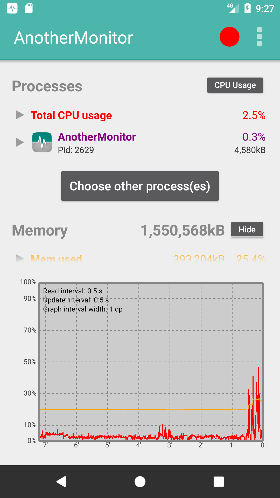
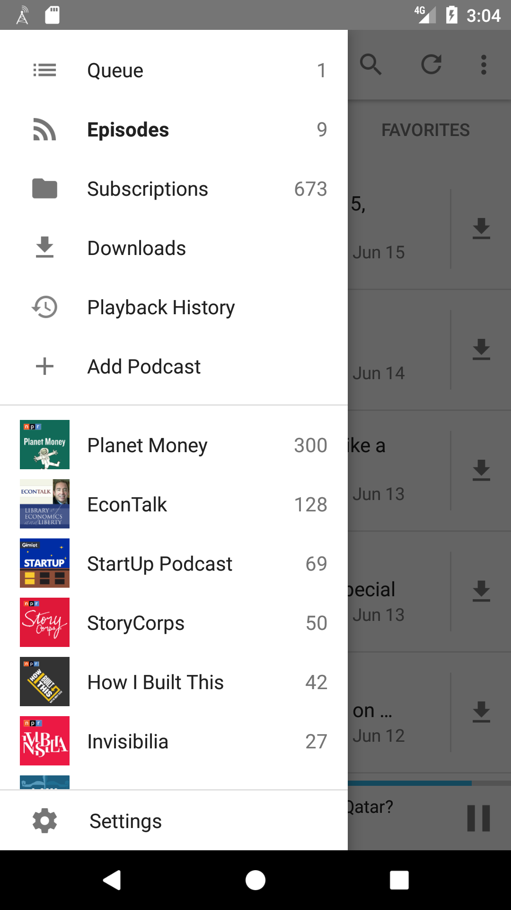
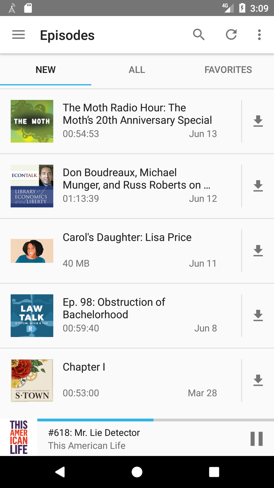

class: center, middle # Become a better Android developer ## with examples and patterns from open source --- # About me * [@beyang](https://twitter.com/beyang) * CTO, [Sourcegraph](https://sourcegraph.com/) --- # What this talk is about * **Examples** from 3 open-source Android apps * A **process** you can use to efficiently discover these examples on your own * A **tool** built with Gradle to accelerate this process <br> <center> <h2>Follow along:</h2> <h2>[TODO: insert bit.ly URL]</h2> </center> ??? * View slides as a reference Whirlwind tour of how to Android with examples from open source. The goal is not that you understand how each and every example works, but that you know there exists an example and can use these slides later as a reference. What should you immediately take away from this talk? A process for leveraging open source to boost how much code you've seen. * The graph of code is a powerful resource you can use to grow your own programming talents. * Sourcegraph is a semantic index of all the Java code in the world designed to make it easier to explore. * Most of what you do when you build a conceptual model of code reduces to walking forward and backward along the graph of code. * Because Sourcegraph indexes all this code and interfaces with a lot of members in the Java community (both inside companies and in open source), we've seen a lot of patterns and anti-patterns for what works well. * Here's a sampling of the knowledge that the graph contains, curated using our experience indexing it. --- <div style="height: 100%; position: absolute; top: 30%;"> Good artists copy. Great artists steal. <br><br> —Picasso </div> --- ## Topics we'll cover in examples * Model-view-controller / model-view-adapter patterns * Using `Butterknife` to bind views to fields * Navigation drawer and `DrawerLayout` * `BottomNavigationView` * Navigation tabs and `ViewPager` * `RecyclerView` for data feeds and lists * Maps and `MapView` * `TextureView` * Audio playback * HTTP requests (via OkHttp) * REST API clients (via Retrofit) * Mocking HTTP client via `Mockito` * Persisting data to a SQLite database * Read low-level system stats * Threading * Persistent bottom view * Writing to filesystem * Mapping enums to ints --- # App #1: [Wikipedia](https://play.google.com/store/apps/details?id=org.wikipedia) <img src="images/feed.png" alt="Wikipedia app" style="width: 32%"> <img src="images/lists.png" alt="Wikipedia app" style="width: 32%"> <img src="images/nearby.png" alt="Wikipedia app" style="width: 32%"> --- # App #1: [Wikipedia](https://play.google.com/store/apps/details?id=org.wikipedia) A medium-sized [open-source app](https://github.com/wikimedia/apps-android-wikipedia). * 738 Java files * 69,257 lines of code * 2,544 lines of comments * 9 out of 10 classes & methods have no docstring * 5,378 commits over 4 years * 496 GitHub stars If the Wikipedia app were a book, it'd be half the length of *Moby Dick*.<sup>*</sup> .footer[\* Assuming 1 LoC == 1.5 words] -- ## *Where are the Spark Notes?* <!-- --- --> <!-- # Ways to dive into code --> <!-- Good approaches: --> <!-- * Read the docs --> <!-- * Fix a bug --> <!-- * Get a tutorial from a coworker --> <!-- Bad approach: --> <!-- * Try to read the code --> <!-- ??? --> <!-- Read the docs --> <!-- * Pros: --> <!-- * Good high-level understanding --> <!-- * Cons: --> <!-- * If docs are long, can be tedious --> <!-- * Docs might not exist or be out of date --> <!-- Fix a bug: deep but narrow slice of knowledge --> <!-- * Pros --> <!-- * have to understand how things actually work --> <!-- * Cons --> <!-- * Takes a good amount of time --> <!-- * Only gives you narrow slice --> <!-- * Need an expert to help you pick good bugs (not too hard, not too easy, yields good knowledge) --> <!-- Tutorial from coworker --> <!-- * Pros --> <!-- * --> <!-- --- --> <!-- # Problems with reading code --> <!-- A codebase is like a dictionary. --> <!-- * A bunch of definitions --> <!-- * Definitions reference one another --> <!-- * No obvious place to start --> <!-- * No obvious narrative arc --> <!-- * Don't want to read the whole thing --> <!-- So reading it is **boring**. --> --- # General-purpose algorithm for reading code -- 1. Ask a question about how something works. 1. Figure out the answer.* 1. Repeat. .footer[\* You should understand the answer well enough that implementing it yourself would be "due diligence."] -- <center> <strong>Always have a question in mind you're trying to answer.</strong> </center> ??? Many ways to read and understand code. This is just one way. It has worked well for me as a professional programmer and worked well for me in teaching students as a T.A. -- ### Some "icebreaker" questions: 1. How does it arrive at its initial state? 1. Where's the "main" function? 1. What options does it present to the user after initialization? ??? Just like a conversation with a person, there are a few standard "icebreakers" you can use to get the conversation rolling. --- ### Wikipedia: how does it arrive at its initial state? <center> <img src="images/feed.png" alt="Wikipedia app" style="width: 40%"> </center> --- ### Wikipedia: where's the "main" function? Looking for something like: ```java public class MainActivity { public void onCreate(Bundle savedInstanceState) { ... } } ``` ??? * Any Android developer knows that Android apps are built around "activities." * Main activity is called `MainActivity`. The initializer method for an `Activity` instance is `onCreate`, so let's start there. -- Search for the main activity class: [](https://sourcegraph.com/github.com/wikimedia/apps-android-wikipedia@8857c36d6a4ed4c106086d3436c2e3a4afd08f8c/-/blob/app/src/main/java/org/wikipedia/main/MainActivity.java#L13:14-13:26) --- ### Wikipedia: how does it arrive at its initial state? (continued) No `MainActivity.onCreate` method, so let's walk up its inheritance tree: <a href="https://sourcegraph.com/github.com/wikimedia/apps-android-wikipedia@edb0a841475606613ea4f6c3a4cda2d34c62b4e0/-/blob/app/src/main/java/org/wikipedia/main/MainActivity.java#L13-14"> ```java public class MainActivity extends SingleFragmentToolbarActivity<MainFragment> ``` </a> *extends* <a href="https://sourcegraph.com/github.com/wikimedia/apps-android-wikipedia@edb0a841475606613ea4f6c3a4cda2d34c62b4e0/-/blob/app/src/main/java/org/wikipedia/activity/SingleFragmentToolbarActivity.java#L15:23"> ```java public abstract class SingleFragmentToolbarActivity<T extends Fragment> extends SingleFragmentActivity<T> { ``` </a> *extends* <a href="https://sourcegraph.com/github.com/wikimedia/apps-android-wikipedia@edb0a841475606613ea4f6c3a4cda2d34c62b4e0/-/blob/app/src/main/java/org/wikipedia/activity/SingleFragmentActivity.java#L14:23"> ```java public abstract class SingleFragmentActivity<T extends Fragment> extends ThemedActionBarActivity { @Override public void onCreate(Bundle savedInstanceState) { super.onCreate(savedInstanceState); setContentView(getLayout()); if (!isFragmentCreated()) { addFragment(createFragment()); } } ``` ??? * No `MainActivity.onCreate` * Inheritance tree * `FragmentManager` * `createFragment()` --- ### Wikipedia: how does it arrive at its initial state? (continued) <a href="https://sourcegraph.com/github.com/wikimedia/apps-android-wikipedia@edb0a841475606613ea4f6c3a4cda2d34c62b4e0/-/blob/app/src/main/java/org/wikipedia/main/MainActivity.java#L20-23"> ```java public class MainActivity extends SingleFragmentToolbarActivity<MainFragment> implements MainFragment.Callback { ... @Override protected MainFragment createFragment() { return MainFragment.newInstance(); } ``` </a> *creates new instance of `MainFragment`* --- ### Wikipedia: how does it arrive at its initial state? (continued) `MainFragment.onCreateView` wires up the tab bar to the view pager: <a href="https://sourcegraph.com/github.com/wikimedia/apps-android-wikipedia@edb0a841475606613ea4f6c3a4cda2d34c62b4e0/-/blob/app/src/main/java/org/wikipedia/main/MainFragment.java#L101-123:6"> ```java public class MainFragment extends Fragment implements BackPressedHandler, FeedFragment.Callback, NearbyFragment.Callback, HistoryFragment.Callback, SearchFragment.Callback, LinkPreviewDialog.Callback { @BindView(R.id.fragment_main_view_pager) ViewPager viewPager; @BindView(R.id.fragment_main_nav_tab_layout) NavTabLayout tabLayout; ... @Nullable @Override public View onCreateView(LayoutInflater inflater, @Nullable ViewGroup container, @Nullable Bundle savedInstanceState) { super.onCreateView(inflater, container, savedInstanceState); View view = inflater.inflate(R.layout.fragment_main, container, false); unbinder = ButterKnife.bind(this, view); viewPager.setAdapter(new NavTabFragmentPagerAdapter(getChildFragmentManager())); tabLayout.setOnNavigationItemSelectedListener(new BottomNavigationView.OnNavigationItemSelectedListener() { @Override public boolean onNavigationItemSelected(@NonNull MenuItem item) { viewPager.setCurrentItem(item.getOrder()); return true; } }); ``` </a> ??? * `createFragment() -> MainFragment` * `MainFragment.onCreateView` * "inflates" view from XML * Butterknife * `@BindView` * `Butterknife.bind` * wires up both a `ViewPager` view and a `NavTabLayout (BottomNavigationView)` view * The `ViewPager` instance gets its view from the `NavTabLayout` instance, so let's --- ### Wikipedia: how does it arrive at its initial state? (continued) `MainFragment.onCreateView` *inflates view from* `resources/fragment_main.xml` <a href="https://sourcegraph.com/github.com/wikimedia/apps-android-wikipedia@edb0a841475606613ea4f6c3a4cda2d34c62b4e0/-/blob/app/src/main/res/layout/fragment_main.xml#L28-37"> ```xml <org.wikipedia.navtab.NavTabLayout ``` </a> *references* `NavTabLayout.java` <a href="https://sourcegraph.com/github.com/wikimedia/apps-android-wikipedia@edb0a841475606613ea4f6c3a4cda2d34c62b4e0/-/blob/app/src/main/java/org/wikipedia/navtab/NavTabLayout.java#L25-30:6"> ```java public class NavTabLayout extends BottomNavigationView { ... private void setTabViews() { for (int i = 0; i < NavTab.size(); i++) { NavTab navTab = NavTab.of(i); getMenu().add(Menu.NONE, i, i, navTab.text()).setIcon(navTab.icon()); } } ``` </a> *calls* `NavTab.of` <a href="https://sourcegraph.com/github.com/wikimedia/apps-android-wikipedia@edb0a841475606613ea4f6c3a4cda2d34c62b4e0/-/blob/app/src/main/java/org/wikipedia/navtab/NavTab.java#L43-45:6"> ```java @NonNull public static NavTab of(int code) { return MAP.get(code); } ``` </a> --- ### Wikipedia: how does it arrive at its initial state? (continued) *references* `NavTab.EXPLORE` <a href="https://sourcegraph.com/github.com/wikimedia/apps-android-wikipedia@edb0a841475606613ea4f6c3a4cda2d34c62b4e0/-/blob/app/src/main/java/org/wikipedia/navtab/NavTab.java#L16-21:7"> ```java public enum NavTab implements EnumCode { EXPLORE(R.string.nav_item_feed, R.drawable.ic_globe) { @NonNull @Override public Fragment newInstance() { return FeedFragment.newInstance(); } }, ``` </a> *references* `FeedFragment.newInstance` <a href="https://sourcegraph.com/github.com/wikimedia/apps-android-wikipedia@edb0a841475606613ea4f6c3a4cda2d34c62b4e0/-/blob/app/src/main/java/org/wikipedia/feed/FeedFragment.java#L75-76"> ```java @NonNull public static FeedFragment newInstance() { ``` </a> --- ### Wikipedia: how does it arrive at its initial state? (recap) <table class="fragment-views"> <tr> <th> Activity hierarchy </th> <th> Views </th> </tr> <tr> <td> <code>MainActivity</code> </td> <td> <code>FrameLayout</code> </td> </tr> <tr> <td> <code> MainFragment</code> </td> <td> <code>CoordinatorLayout</code><br> <code> NoSwipeViewPager (ViewPager)</code><br> <code>NavTabLayout</code> </td> </tr> <tr> <td> <code> FeedFragment</code> </td> <td> <code>FeedView (RecyclerView)</code> </td> </tr> <tr> <td> <code> ReadingListsFragment</code> </td> <td> <code>RecyclerView</code> </td> </tr> <tr> <td> <code> HistoryFragment</code> </td> <td> <code>RecyclerView</code> </td> </tr> <tr> <td> <code> NearbyFragment</code> </td> <td> <code>MapView</code> </td> </tr> </table> <br> <table class="fragment-views"> <tr> <th colspan="2"> Other classes </th> </tr> <tr> <td colspan="2"> <code>NavTab</code> </td> </tr> </table> --- Note the use of [Butterknife](https://github.com/JakeWharton/butterknife) to bind view objects to fields in the fragments. <a href="https://sourcegraph.com/github.com/wikimedia/apps-android-wikipedia@edb0a841475606613ea4f6c3a4cda2d34c62b4e0/-/blob/app/src/main/java/org/wikipedia/main/MainFragment.java#L74:14-74:26"> ```java public class MainFragment extends Fragment implements BackPressedHandler, FeedFragment.Callback, NearbyFragment.Callback, HistoryFragment.Callback, SearchFragment.Callback, LinkPreviewDialog.Callback { ... @BindView(R.id.fragment_main_view_pager) ViewPager viewPager; @BindView(R.id.fragment_main_nav_tab_layout) NavTabLayout tabLayout; private Unbinder unbinder; ... @Nullable @Override public View onCreateView(LayoutInflater inflater, @Nullable ViewGroup container, @Nullable Bundle savedInstanceState) { ... unbinder = ButterKnife.bind(this, view); ... } ... @Override public void onDestroyView() { unbinder.unbind(); unbinder = null; super.onDestroyView(); } ... } ``` </a> ??? * Calls to `ButterKnife.bind` replace `findViewById` boilerplate --- ### EnumCode: checked conversion of ints to enums <a href="https://sourcegraph.com/github.com/wikimedia/apps-android-wikipedia@8857c36d6a4ed4c106086d3436c2e3a4afd08f8c/-/blob/app/src/main/java/org/wikipedia/model/EnumCode.java#L3:18-3:26"> ```java public interface EnumCode { int code(); } ``` </a> Pattern used in 16 files, including: <a href="https://sourcegraph.com/github.com/wikimedia/apps-android-wikipedia@8857c36d6a4ed4c106086d3436c2e3a4afd08f8c/-/blob/app/src/main/java/org/wikipedia/database/http/HttpStatus.java#L9:35-9:43"> ```java public enum HttpStatus implements EnumCode { SYNCHRONIZED(0), OUTDATED(1), MODIFIED(2), ... private static final EnumCodeMap<HttpStatus> MAP = new EnumCodeMap<>(HttpStatus.class); private final int code; @NonNull public static HttpStatus of(int code) { return MAP.get(code); } ... ``` </a> --- ### What can the user do from here? The `NavTab` class outlines exactly what the user's options are: <a href="https://sourcegraph.com/github.com/wikimedia/apps-android-wikipedia@8857c36d6a4ed4c106086d3436c2e3a4afd08f8c/-/blob/app/src/main/java/org/wikipedia/navtab/NavTab.java#L16-36:7"> ```java public enum NavTab implements EnumCode { EXPLORE(R.string.nav_item_feed, R.drawable.ic_globe) { @NonNull @Override public Fragment newInstance() { return FeedFragment.newInstance(); } }, READING_LISTS(R.string.nav_item_reading_lists, R.drawable.ic_bookmark_white_24dp) { @NonNull @Override public Fragment newInstance() { return ReadingListsFragment.newInstance(); } }, HISTORY(R.string.nav_item_history, R.drawable.ic_restore_black_24dp) { @NonNull @Override public Fragment newInstance() { return HistoryFragment.newInstance(); } }, NEARBY(R.string.nav_item_nearby, R.drawable.ic_explore_black_24dp) { @NonNull @Override public Fragment newInstance() { return NearbyFragment.newInstance(); } }; ... } ``` </a> --- ### What can the user do from here? And these map clearly onto what's present in the UI: <center> <img src="images/navbar.png" style="width: 35%;"> </center> --- # Where to go from here? 1. How does the **feed** work? 1. How do the **reading lists** work? 1. How does the **map** work? 1. How is this app **tested**? ??? 1. How does the feed work? * Are there any clever performance hacks? How does pull-down refresh work? 1. How are reading lists stored persistently? 1. How does the app load nearby points of interest in the map view? How does it do so without blocking? How does it do so efficiently? 1. How is this app tested? --- ### How does the feed work? <center><img src="images/feed.png" style="width: 25%"></center> * How does it load and display cards efficiently? * How does it fetch data from the server? --- ### How does it load and display cards? `FeedFragment` holds references to models and views for the feed. <a href="https://sourcegraph.com/github.com/wikimedia/apps-android-wikipedia@8857c36d6a4ed4c106086d3436c2e3a4afd08f8c/-/blob/app/src/main/java/org/wikipedia/feed/FeedFragment.java#L44:14-44:26"> ```java public class FeedFragment extends Fragment implements BackPressedHandler { @BindView(R.id.feed_swipe_refresh_layout) SwipeRefreshLayout swipeRefreshLayout; @BindView(R.id.fragment_feed_feed) FeedView feedView; @BindView(R.id.fragment_feed_header) View feedHeader; private FeedAdapter<?> feedAdapter; private WikipediaApp app; private FeedCoordinator coordinator; private FeedFunnel funnel; private final FeedAdapter.Callback feedCallback = new FeedCallback(); private FeedScrollListener feedScrollListener = new FeedScrollListener(); private OverflowCallback overflowCallback = new OverflowCallback(); ... @Nullable @Override public View onCreateView(LayoutInflater inflater, @Nullable ViewGroup container, @Nullable Bundle savedInstanceState) { super.onCreateView(inflater, container, savedInstanceState); View view = inflater.inflate(R.layout.fragment_feed, container, false); ... } ... } ``` </a> ??? Next: `FeedView` --- ### How does the feed view work? <a href="https://sourcegraph.com/github.com/wikimedia/apps-android-wikipedia@8857c36d6a4ed4c106086d3436c2e3a4afd08f8c/-/blob/app/src/main/java/org/wikipedia/feed/FeedFragment.java#L46-47"> ```java public class FeedFragment extends Fragment implements BackPressedHandler { ... @BindView(R.id.fragment_feed_feed) FeedView feedView; ``` </a> `FeedView` subclasses `RecyclerView`: <a href="https://sourcegraph.com/github.com/wikimedia/apps-android-wikipedia@8857c36d6a4ed4c106086d3436c2e3a4afd08f8c/-/blob/app/src/main/java/org/wikipedia/feed/view/FeedView.java#L19:14"> ```java public class FeedView extends AutoFitRecyclerView { private StaggeredGridLayoutManager recyclerLayoutManager; @Nullable private ItemTouchHelper itemTouchHelper; public FeedView(Context context) { super(context); init(); } public FeedView(Context context, AttributeSet attrs) { super(context, attrs); init(); } ... ``` </a> Side note: the `RecyclerView` [documentation](https://developer.android.com/reference/android/support/v7/widget/RecyclerView.html) is 13,000 words long. ??? `RecyclerView`: "a flexible view for providing a limited window into a large data set." --- ### How does is the feed initialized? `FeedFragment` wires up the view to adapter, callback, and scrollback listener. <a href="https://sourcegraph.com/github.com/wikimedia/apps-android-wikipedia@5ed559f1e05e6e3379a427c49d52578a06b454d7/-/blob/app/src/main/java/org/wikipedia/feed/FeedFragment.java#L97-101"> ```java @Nullable @Override public View onCreateView(LayoutInflater inflater, @Nullable ViewGroup container, @Nullable Bundle savedInstanceState) { ... feedAdapter = new FeedAdapter<>(coordinator, feedCallback); feedView.setAdapter(feedAdapter); feedView.setCallback(feedCallback); feedView.addOnScrollListener(feedScrollListener); } ``` </a> The callbacks handle user-triggered events from the view. The adapter provides view lifecycle handler methods and view data provider methods. --- ### Where are the card views created and updated? ```java public class FeedAdapter<T extends View & FeedCardView<?>> extends DefaultRecyclerAdapter<Card, T> { ... @Override public DefaultViewHolder<T> onCreateViewHolder(ViewGroup parent, int viewType) { return new DefaultViewHolder<>(newView(parent.getContext(), viewType)); } @Override public void onBindViewHolder(DefaultViewHolder<T> holder, int position) { Card item = item(position); T view = holder.getView(); if (coordinator.finished() && position == getItemCount() - 1 && callback != null) { callback.onRequestMore(); } //noinspection unchecked ((FeedCardView<Card>) view).setCard(item); if (view instanceof OfflineCardView && position == 1) { ((OfflineCardView) view).setTopPadding(); } } ``` ??? This follows the standard `RecyclerView` pattern. --- ### How do you customize card appearance? Different card view classes, identified by enum backed by `EnumCode`: ```java public enum CardType implements EnumCode { SEARCH_BAR(0) { @NonNull @Override public FeedCardView<?> newView(@NonNull Context ctx) { return new SearchCardView(ctx); } }, CONTINUE_READING(1) { @NonNull @Override public FeedCardView<?> newView(@NonNull Context ctx) { return new ContinueReadingCardView(ctx); } }, BECAUSE_YOU_READ_LIST(2) { @NonNull @Override public FeedCardView<?> newView(@NonNull Context ctx) { return new BecauseYouReadCardView(ctx); } }, MOST_READ_LIST(3) { @NonNull @Override public FeedCardView<?> newView(@NonNull Context ctx) { return new MostReadCardView(ctx); } }, FEATURED_ARTICLE(4) { @NonNull @Override public FeedCardView<?> newView(@NonNull Context ctx) { return new FeaturedArticleCardView(ctx); } }, ``` --- ### What is the "model" for a card? ```java public class FeedAdapter<T extends View & FeedCardView<?>> extends DefaultRecyclerAdapter<Card, T> { ... @Override public void onBindViewHolder(DefaultViewHolder<T> holder, int position) { Card item = item(position); ``` ### Where does it come from? ```java public abstract class DefaultRecyclerAdapter<T, V extends View> extends RecyclerView.Adapter<DefaultViewHolder<V>> { protected T item(int position) { return items.get(position); } ``` ```java public FeedAdapter(@NonNull FeedCoordinatorBase coordinator, @Nullable Callback callback) { super(coordinator.getCards()); ``` ```java @NonNull private FeedCoordinatorBase coordinator; ``` --- ### Where does the model fetch the data from? ```java public abstract class FeedCoordinatorBase { ... private void appendCard(@NonNull Card card) { int progressPos = cards.indexOf(progressCard); insertCard(card, progressPos >= 0 ? progressPos : cards.size()); } ``` ```java private class ClientRequestCallback implements FeedClient.Callback { @Override public void success(@NonNull List<? extends Card> cardList) { for (Card card : cardList) { if (!isCardHidden(card)) { appendCard(card); } } requestNextCard(wiki); } ``` ```java private FeedClient.Callback callback = new ClientRequestCallback(); ``` --- ```java private void requestCard(@NonNull WikiSite wiki) { if (pendingClients.isEmpty()) { removeProgressCard(); return; } pendingClients.get(0).request(context, wiki, currentAge, callback); } ``` ```java public class AggregatedFeedContentClient implements FeedClient { @Nullable private Call<AggregatedFeedContent> call; @Override public void request(@NonNull Context context, @NonNull WikiSite wiki, int age, @NonNull Callback cb) { cancel(); UtcDate date = DateUtil.getUtcRequestDateFor(age); String endpoint = String.format(Locale.ROOT, Prefs.getRestbaseUriFormat(), wiki.scheme(), wiki.authority()); Retrofit retrofit = RetrofitFactory.newInstance(endpoint, wiki); AggregatedFeedContentClient.Service service = retrofit.create(Service.class); call = service.get(date.year(), date.month(), date.date()); call.enqueue(new CallbackAdapter(cb, wiki, age)); } ``` ??? * `FeedCoordinatorBase` manages fetching and organizing cards from a remote data source. * Example use of the Retrofit library. (A "type-safe HTTP client for Android" to expose a REST API as a Java interface). --- # How does the map work? <center><img src="images/nearby.png" style="width: 33%"></center> --- # How does the map work? Let's take a look at the `NearbyFragment`, ```java public class NearbyFragment extends Fragment { ... @BindView(R.id.mapview) MapView mapView; ``` which conveniently has an `initializeMap` method. ```java private void initializeMap() { mapView.getMapAsync(new OnMapReadyCallback() { @Override public void onMapReady(@NonNull MapboxMap mapboxMap) { NearbyFragment.this.mapboxMap = mapboxMap; enableUserLocationMarker(); mapboxMap.getTrackingSettings().setMyLocationTrackingMode(MyLocationTracking.TRACKING_NONE); mapboxMap.setOnScrollListener(new MapboxMap.OnScrollListener() { @Override public void onScroll() { fetchNearbyPages(); } }); ``` --- `initializeMap` calls `fetchNearbyPages`, ```java private void fetchNearbyPages() { final int fetchTaskDelayMillis = 500; mapView.removeCallbacks(fetchTaskRunnable); mapView.postDelayed(fetchTaskRunnable, fetchTaskDelayMillis); } ``` and this invokes `fetchTaskRunnable`. --- This, in turn, runs `client.request(...)` in the background, where `client` is an instance of `NearbyClient`. ```java private Runnable fetchTaskRunnable = new Runnable() { @Override public void run() { if (!isResumed() || mapboxMap == null) { return; } onLoading(); WikiSite wiki = WikipediaApp.getInstance().getWikiSite(); client.request(wiki, mapboxMap.getCameraPosition().target.getLatitude(), mapboxMap.getCameraPosition().target.getLongitude(), getMapRadius(), new NearbyClient.Callback() { @Override public void success(@NonNull Call<MwQueryResponse<Nearby>> call, @NonNull NearbyResult result) { if (!isResumed()) { return; } lastResult = result; showNearbyPages(result); onLoaded(); } ``` --- `NearbyClient` wraps an instance of `MwCachedService`, ```java class NearbyClient { ... @NonNull private final WikiCachedService<Service> cachedService = new MwCachedService<>(Service.class); public Call<MwQueryResponse<Nearby>> request(@NonNull WikiSite wiki, double latitude, double longitude, double radius, @NonNull Callback cb) { return request(wiki, cachedService.service(wiki), latitude, longitude, radius, cb); } } ``` which returns an instance of `Retrofit`, ```java public class MwCachedService<T> extends WikiCachedService<T> { public MwCachedService(@NonNull Class<T> clazz) { super(clazz); } @NonNull @Override protected Retrofit create() { return RetrofitFactory.newInstance(wiki()); } } ``` --- which is constructed by a `RetrofitFactory` instance. ```java public final class RetrofitFactory { public static Retrofit newInstance(@NonNull WikiSite wiki) { return newInstance(wiki.url() + "/", wiki); } public static Retrofit newInstance(@NonNull String endpoint, @NonNull WikiSite wiki) { return new Retrofit.Builder() .client(OkHttpConnectionFactory.getClient().newBuilder() .addInterceptor(new LanguageVariantHeaderInterceptor(wiki)).build()) .baseUrl(endpoint) .addConverterFactory(GsonConverterFactory.create(GsonUtil.getDefaultGson())) .build(); } ``` ??? This is another good example of how to use `Retrofit` in the wild. --- ### How do we test the backend client? Use Mockito to mock backend API endpoints in API client tests: ```java import static org.mockito.Mockito.mock; ... public class NearbyClientTest extends MockWebServerTest { @NonNull private final NearbyClient subject = new NearbyClient(); @Test public void testRequestSuccessHasResults() throws Throwable { enqueueFromFile("nearby.json"); NearbyClient.Callback cb = mock(NearbyClient.Callback.class); Call<MwQueryResponse<Nearby>> call = request(cb); server().takeRequest(); assertCallbackSuccess(call, cb); } ``` ([source](https://sourcegraph.com/github.com/wikimedia/apps-android-wikipedia@8857c36d6a4ed4c106086d3436c2e3a4afd08f8c/-/blob/app/src/test/java/org/wikipedia/nearby/NearbyClientTest.java?q=onData#L26:14-26:30)) <!-- --- --> <!-- ## Wikipedia, the SparkNotes --> <!-- - `NavTab`-based app built around 4 main `Fragment` subclasses --> <!-- - Subclasses `RecyclerView` and `RecyclerView.Adapter` for efficient table-based views --> <!-- - Uses `MapView` for the map --> <!-- - Uses OkHttp and Retrofit for calls to Wikipedia API, Mockito to test this --> --- # App #2: [AnotherMonitor](https://play.google.com/store/apps/details?id=org.anothermonitor) <table> <tr> <td width="50%">  </td> <td width="50%" style="vertical-align: top;"> A small open-source app that displays system-level stats. <ul> <li>14 Java files</li> <br> <li>3,811 lines of code</li> <br> <li>Very few comments</li> <br> <li>43 commits over 2 years</li> <br> <li>426 GitHub stars</li> </ul> </td> </tr> </table> --- ## AnotherMonitor topics of interest * How do you get CPU and memory usage? * How do you display a nice chart? --- ## Where's the "main" function? ```java public class ActivityMain extends Activity { ... public void onCreate(Bundle savedInstanceState) { super.onCreate(savedInstanceState); startService(new Intent(this, ServiceReader.class)); setContentView(R.layout.activity_main); mPrefs = getSharedPreferences(getString(R.string.app_name) + C.prefs, MODE_PRIVATE); ... } ... } ``` ([source](https://sourcegraph.com/github.com/AntonioRedondo/AnotherMonitor@8b7fc67af9216ccdd3209cc014901b12efb5da3e/-/blob/AnotherMonitor/src/main/java/org/anothermonitor/ActivityMain.java#L246:14-246:22)) ??? * Looking for `ActivityMain.onCreate` * Search for that in your favorite code searcher or IDE --- ## What's done on initialization? ```java public void onCreate(Bundle savedInstanceState) { super.onCreate(savedInstanceState); startService(new Intent(this, ServiceReader.class)); setContentView(R.layout.activity_main); mPrefs = getSharedPreferences(getString(R.string.app_name) + C.prefs, MODE_PRIVATE); ... res = getResources(); sD = res.getDisplayMetrics().density; ... mVG = (ViewGraphic) findViewById(R.id.ANGraphic); graphicMode = mPrefs.getInt(C.graphicMode, C.graphicModeShowMemory); mVG.setGraphicMode(graphicMode); ... mBMemory = (Button) findViewById(R.id.BMemory); mBMemory.setOnClickListener(new View.OnClickListener() { ... }); ... } ``` ([source](https://sourcegraph.com/github.com/AntonioRedondo/AnotherMonitor@8b7fc67af9216ccdd3209cc014901b12efb5da3e/-/blob/AnotherMonitor/src/main/java/org/anothermonitor/ActivityMain.java#L246:14-246:22)) --- ### How does it render this data in the chart view? `TextureView`: special hardware-accelerated view, can be rendered in separate thread. ```java public class ViewGraphic extends TextureView { private boolean graphicInitialised, cpuTotalD, cpuAMD, memUsedD, memAvailableD, memFreeD, cachedD, thresholdD; private int processesMode, graphicMode, yTop, yBottom, xLeft, xRight, yBottomTextSpace=25, xLeftTextSpace=10, yLegendSpace = 8, graphicHeight, graphicWidth, minutes, seconds, intervalTotalNumber, memTotal, thickParam, thickGrid, thickEdges, tempVar, textSize, textSizeLegend, yTopSeparation; private String readIntervalText, updateIntervalText, graphicIntervaWidthlText, recordingText = "Recording"; private Rect bgRect; ... private ServiceReader mSR; private Resources res; private Thread mThread; ... } ``` ([source](https://sourcegraph.com/github.com/AntonioRedondo/AnotherMonitor@8b7fc67af9216ccdd3209cc014901b12efb5da3e/-/blob/AnotherMonitor/src/main/java/org/anothermonitor/ViewGraphic.java#L29:14-29:25)) ??? * `TextureView` used when hardware acceleration is desired... overkill? --- ### How does it render this data in the chart view? View update logic spread across 2 classes: ```java public class ActivityMain extends Activity { ... private Runnable drawRunnable = new Runnable() { ... }, drawRunnableGraphic = new Runnable() { @Override public void run() { mThread = new Thread() { @Override public void run() { Canvas canvas = null; if (!canvasLocked) { // http://stackoverflow.com/questions/9792446/android-java-lang-illegalargumentexception canvas = mVG.lockCanvas(); if (canvas != null) { canvasLocked = true; mVG.onDrawCustomised(canvas, mThread); // https://github.com/AntonioRedondo/AnotherMonitor/issues/1 // http://stackoverflow.com/questions/23893813/canvas-restore-causing-underflow-exception-in-very-rare-cases try { mVG.unlockCanvasAndPost(canvas); } catch (IllegalStateException e) { Log.w("Activity main: ", e.getMessage()); } ``` --- ### How does it render this data in the chart view? ```java public class ViewGraphic extends TextureView { ... // @Override @SuppressWarnings("unchecked") protected void onDrawCustomised(Canvas canvas, Thread thread) { if (mSR == null || canvas == null) return; else if (!graphicInitialised) initializeGraphic(); mThread = thread; ... if (mThread == null || mThread.isInterrupted()) return; canvas.drawColor(Color.TRANSPARENT, PorterDuff.Mode.CLEAR); if (mThread.isInterrupted()) return; canvas.drawRect(bgRect, bgPaint); ... } } ``` --- ### Where does CPU and memory data come from? ```java public class ActivityMain extends Activity { ... private ServiceReader mSR; ... private Runnable drawRunnable = new Runnable() { @Override public void run() { ... setTextLabelCPU(null, mTVCPUTotalP, mSR.getCPUTotalP()); ... setTextLabelMemory(mTVMemUsed, mTVMemUsedP, mSR.getMemUsed()); setTextLabelMemory(mTVMemAvailable, mTVMemAvailableP, mSR.getMemAvailable()); setTextLabelMemory(mTVMemFree, mTVMemFreeP, mSR.getMemFree()); setTextLabelMemory(mTVCached, mTVCachedP, mSR.getCached()); setTextLabelMemory(mTVThreshold, mTVThresholdP, mSR.getThreshold()); ``` ([source](https://sourcegraph.com/github.com/AntonioRedondo/AnotherMonitor@8b7fc67af9216ccdd3209cc014901b12efb5da3e/-/blob/AnotherMonitor/src/main/java/org/anothermonitor/ActivityMain.java#L97-98)) --- ### Where does CPU and memory data come from? (continued) ```java public class ServiceReader extends Service { ... private ActivityManager.MemoryInfo mi; ... private Runnable readRunnable = new Runnable() { @Override public void run() { // The service makes use of an explicit Thread instead of a Handler because with the Threat the code is executed more synchronously. // However the ViewGraphic is drawed with a Handler because the drawing code must be executed in the UI thread. Thread thisThread = Thread.currentThread(); while (readThread == thisThread) { read(); try { Thread.sleep(intervalRead); } catch (InterruptedException e) { break; } } } }; private volatile Thread readThread = new Thread(readRunnable, C.readThread); ... } ``` --- ### Where does CPU and memory data come from? (continued) ```java public class ServiceReader extends Service { ... private void read() { try { reader = new BufferedReader(new FileReader("/proc/meminfo")); s = reader.readLine(); while (s != null) { ... } ... // CPU usage percents calculation. It is possible negative values or values higher than 100% may appear. // http://stackoverflow.com/questions/1420426 // http://kernel.org/doc/Documentation/filesystems/proc.txt reader = new BufferedReader(new FileReader("/proc/stat")); sa = reader.readLine().split("[ ]+", 9); work = Long.parseLong(sa[1]) + Long.parseLong(sa[2]) + Long.parseLong(sa[3]); total = work + Long.parseLong(sa[4]) + Long.parseLong(sa[5]) + Long.parseLong(sa[6]) + Long.parseLong(sa[7]); ... } ... } ``` ([source](https://sourcegraph.com/github.com/AntonioRedondo/AnotherMonitor@8b7fc67af9216ccdd3209cc014901b12efb5da3e/-/blob/AnotherMonitor/src/main/java/org/anothermonitor/ServiceReader.java#L259:15-259:19)) --- # App #3: [AntennaPod](http://antennapod.org/) A medium-sized open-source podcast app. * 356 Java files * 60,937 lines of code * 3,937 commits over 5.5 years * 1,577 GitHub stars   --- # AntennaPod topics of interest * How do you create a navigation menu interface? * How do you make a "sticky" playback interface? * How do you persist large audio files? --- ### Where's the "main" function? ```java /** * The activity that is shown when the user launches the app. */ public class MainActivity extends CastEnabledActivity implements NavDrawerActivity { ... @Override public void onCreate(Bundle savedInstanceState) { setTheme(UserPreferences.getNoTitleTheme()); super.onCreate(savedInstanceState); StorageUtils.checkStorageAvailability(this); setContentView(R.layout.main); toolbar = (Toolbar) findViewById(R.id.toolbar); setSupportActionBar(toolbar); ... } ``` ([source](https://sourcegraph.com/github.com/AntennaPod/AntennaPod@b3a879dd8f938fc3086dfd73c8cb915b1da7cecd/-/blob/app/src/main/java/de/danoeh/antennapod/activity/MainActivity.java?q=class%20CastEnabledActivity#L125:17-125:25)) --- ### What's done on initialization? ```java public class MainActivity extends CastEnabledActivity implements NavDrawerActivity { ... public void onCreate(Bundle savedInstanceState) { ... toolbar = (Toolbar) findViewById(R.id.toolbar); setSupportActionBar(toolbar); ... drawerLayout = (DrawerLayout) findViewById(R.id.drawer_layout); navList = (ListView) findViewById(R.id.nav_list); navDrawer = findViewById(R.id.nav_layout); ... final FragmentManager fm = getSupportFragmentManager(); ... FragmentTransaction transaction = fm.beginTransaction(); Fragment mainFragment = fm.findFragmentByTag("main"); if (mainFragment != null) { transaction.replace(R.id.main_view, mainFragment); } else { String lastFragment = getLastNavFragment(); ... } externalPlayerFragment = new ExternalPlayerFragment(); transaction.replace(R.id.playerFragment, externalPlayerFragment, ExternalPlayerFragment.TAG); transaction.commit(); checkFirstLaunch(); } ``` --- ### How do you create a navigation menu interface? ```java public class MainActivity extends CastEnabledActivity implements NavDrawerActivity { ... private DrawerLayout drawerLayout; ... @Override public void onCreate(Bundle savedInstanceState) { ... drawerLayout = (DrawerLayout) findViewById(R.id.drawer_layout); navList = (ListView) findViewById(R.id.nav_list); navDrawer = findViewById(R.id.nav_layout); drawerToggle = new ActionBarDrawerToggle(this, drawerLayout, R.string.drawer_open, R.string.drawer_close); if (savedInstanceState != null) { int backstackCount = savedInstanceState.getInt(SAVE_BACKSTACK_COUNT, 0); drawerToggle.setDrawerIndicatorEnabled(backstackCount == 0); } drawerLayout.setDrawerListener(drawerToggle); ... } ``` ([source](https://sourcegraph.com/github.com/AntennaPod/AntennaPod@b3a879dd8f938fc3086dfd73c8cb915b1da7cecd/-/blob/app/src/main/java/de/danoeh/antennapod/activity/MainActivity.java#L143-153)) ??? NOTE: no use of Butterknife for view binding here --- ### How do you make a "sticky" playback interface? ```java public class MainActivity extends CastEnabledActivity implements NavDrawerActivity { ... private ExternalPlayerFragment externalPlayerFragment; ... @Override public void onCreate(Bundle savedInstanceState) { ... externalPlayerFragment = new ExternalPlayerFragment(); transaction.replace(R.id.playerFragment, externalPlayerFragment, ExternalPlayerFragment.TAG); } } ``` ([source](https://sourcegraph.com/github.com/AntennaPod/AntennaPod@b3a879dd8f938fc3086dfd73c8cb915b1da7cecd/-/blob/app/src/main/java/de/danoeh/antennapod/activity/MainActivity.java?q=navigation#L199-202)) --- ### How do you persist large audio files? ```java public class MainActivity extends CastEnabledActivity implements NavDrawerActivity { ... public static final String[] NAV_DRAWER_TAGS = { QueueFragment.TAG, EpisodesFragment.TAG, SubscriptionFragment.TAG, DownloadsFragment.TAG, PlaybackHistoryFragment.TAG, AddFeedFragment.TAG, NavListAdapter.SUBSCRIPTION_LIST_TAG }; ``` --- ### How do you persist large audio files? (continued) (TODO: connect these with previous slide's code and next slide's code) * [AllEpisodesFragment](https://sourcegraph.com/github.com/AntennaPod/AntennaPod@b3a879dd8f938fc3086dfd73c8cb915b1da7cecd/-/blob/app/src/main/java/de/danoeh/antennapod/fragment/AllEpisodesFragment.java#L268:20-268:41) * [FeedItemMenuHandler.onMenuItemClicked](https://sourcegraph.com/github.com/AntennaPod/AntennaPod@b3a879dd8f938fc3086dfd73c8cb915b1da7cecd/-/blob/app/src/main/java/de/danoeh/antennapod/menuhandler/FeedItemMenuHandler.java#L157:27-157:44) * [DownloadService](https://sourcegraph.com/github.com/AntennaPod/AntennaPod@b3a879dd8f938fc3086dfd73c8cb915b1da7cecd/-/blob/core/src/main/java/de/danoeh/antennapod/core/service/download/DownloadService.java?q=DownloaderCallback#L88-89) * [HttpDownloader.download](https://sourcegraph.com/github.com/AntennaPod/AntennaPod@b3a879dd8f938fc3086dfd73c8cb915b1da7cecd/-/blob/core/src/main/java/de/danoeh/antennapod/core/service/download/HttpDownloader.java#L47:20-47:28) --- ### How do you persist large audio files? (continued) ```java public class HttpDownloader extends Downloader { ... @Override protected void download() { File destination = new File(request.getDestination()); final boolean fileExists = destination.exists(); if (request.isDeleteOnFailure() && fileExists) { Log.w(TAG, "File already exists"); if (request.getFeedfileType() != FeedImage.FEEDFILETYPE_FEEDIMAGE) { onFail(DownloadError.ERROR_FILE_EXISTS, null); return; } else { onSuccess(); return; } } OkHttpClient.Builder httpClientBuilder = AntennapodHttpClient.newBuilder(); httpClientBuilder.interceptors().add(new BasicAuthorizationInterceptor(request)); OkHttpClient httpClient = httpClientBuilder.build(); RandomAccessFile out = null; InputStream connection; ResponseBody responseBody = null; ``` ([source](https://sourcegraph.com/github.com/AntennaPod/AntennaPod@b3a879dd8f938fc3086dfd73c8cb915b1da7cecd/-/blob/core/src/main/java/de/danoeh/antennapod/core/service/download/HttpDownloader.java#L46-68)) --- ## Recap * Model-view-controller / model-view-adapter patterns * Using `Butterknife` to bind views to fields * Navigation drawer and `DrawerLayout` * `BottomNavigationView` * Navigation tabs and `ViewPager` * `RecyclerView` for data feeds and lists * Maps and `MapView` * `TextureView` * Audio playback * HTTP requests (via OkHttp) * REST API clients (via Retrofit) * Mocking HTTP client via `Mockito` * Persisting data to a SQLite database * Read low-level system stats * Threading * Persistent bottom view * Writing to filesystem * Mapping enums to ints ??? We just covered a bunch of practical examples of this Android functionality. Not covered, but could be: - How to use Fresco for efficient image memory management (TODO) NOTE: emphasize use of third-party libraries. This method generalizes to understanding almost any codebase. --- <br><br> <center> <h2>Process inspires tools.</h2> <h2>⬇ ⬆</h2> <h2>Tools drive adoption of process.</h2> </center> ??? There's a feedback loop --- ## Our code understanding process * is dialectic * feels conversational * is branching and backtracking ### It requires a tool that * gives you the abilities necessary to answer your own questions * is low mental overhead * lets you find and keep your place in code --- ## Code exploration tool primitives * Essential abilities * Jump to def * Find references * Symbol search * Text search (as a fallback) * Low mental overhead * *Just works* across dependency boundaries * Keep your place * Hyperlinks * Tabs or windows, buffer navigation --- ## Code exploration tool examples * IDE * grep * Sourcegraph ---  --- ## How Sourcegraph uses Gradle To understand semantic relationships in code, Sourcegraph must: - fetch the right dependencies to make the compiler happy - understand which symbols belong to which dependencies - map dependency symbols to their source code --- ## How Sourcegraph uses Gradle (continued) [TODO: image of Java language server architecture that shows how Gradle fits in with `javac` and Sourcegraph architecture] --- ## Gradle analysis struggles * Dynamically typed Turing-complete scripting language * Gradle scripts often take full advantage of this --- ## Requests Gradle maintainers: * Consider promoting stronger conventions. * Make Gradle seems more like "data" rather than "code". * Consider not just usability for end-users, but also tool builders. Gradle users: * Copy the conventions present in popular open-source libraries. * Do the simplest thing to get the job done. * Write scripts as declaratively as possible. --- # Takeaways 1. Learn from these examples! (Further reading: [20 open-source Android apps](https://blog.aritraroy.in/20-awesome-open-source-android-apps-to-boost-your-development-skills-b62832cf0fa4)) 1. Try out our code understanding process. 1. Build smart tools that speak Gradle. --- # Contact me Beyang Liu [Sourcegraph](http://sourcegraph.com/) beyang@sourcegraph.com [@beyang](https://twitter.com/beyang) --- # Appendix --- ### How do the reading lists work? <center><img src="images/lists.png" style="width: 33%"></center> --- ### How do the reading lists work? Similar to the feed, Via a `RecyclerView`. This time, adapter is an inner class. ```java public class ReadingListsFragment extends Fragment { private Unbinder unbinder; @BindView(R.id.reading_list_list) RecyclerView readingListView; @BindView(R.id.empty_container) View emptyContainer; @BindView(R.id.search_empty_view) SearchEmptyView searchEmptyView; private ReadingLists readingLists = new ReadingLists(); private ReadingListsFunnel funnel = new ReadingListsFunnel(); private EventBusMethods eventBusMethods = new EventBusMethods(); private ReadingListAdapter adapter = new ReadingListAdapter(); private ReadingListItemCallback listItemCallback = new ReadingListItemCallback(); private ReadingListsSearchCallback searchActionModeCallback = new ReadingListsSearchCallback(); @Nullable private ActionMode actionMode; ``` --- ### How are the reading lists persisted? `ReadingListAdapter` provides data to view by referencing model (`readingLists`). ```java private final class ReadingListAdapter extends RecyclerView.Adapter<ReadingListItemHolder> { @Override public int getItemCount() { return readingLists.size(); } ``` `ReadingLists` model class. ```java public class ReadingLists { ... public void set(@NonNull List<ReadingList> lists) { this.lists = lists; } } ``` ??? Let's find references to its `set` method. --- This callback sets the `lists` field in the model class. ```java public class ReadingListFragment extends Fragment implements ReadingListItemActionsDialog.Callback { ... private void updateReadingListData() { ReadingList.DAO.queryMruLists(null, new CallbackTask.DefaultCallback<List<ReadingList>>() { @Override public void success(List<ReadingList> lists) { if (getActivity() == null) { return; } readingLists.set(lists); readingList = readingLists.get(readingListTitle); if (readingList != null) { searchEmptyView.setEmptyText(getString(R.string.search_reading_list_no_results, readingList.getTitle())); } update(); } }); } ``` It invokes `ReadingListData.queryMruLists`. ```java public final class ReadingListData { ... public List<ReadingList> queryMruLists(@Nullable String searchQuery) { List<ReadingList> rows = new ArrayList<>(); Cursor cursor = lists(searchQuery); ``` --- `ReadingListData.list` invokes `select` on `listClient()`, ```java @NonNull public Cursor lists(@Nullable String searchQuery) { Uri uri = ReadingListContract.ListWithPagesAndDisk.URI; String selection = null; String[] selectionArgs = null; String searchStr = searchQuery; ... return listClient().select(uri, selection, selectionArgs, order); } ``` which returns an instance of `DatabaseClient`. ```java private DatabaseClient<ReadingListRow> listClient() { return client(ReadingListRow.class); } ``` ```java private <T> DatabaseClient<T> client(Class<T> clazz) { return WikipediaApp.getInstance().getDatabaseClient(clazz); } ``` --- The `WikipediaApp` subclass of `Application` provides the database client instance. ```java public class WikipediaApp extends Application { ... public <T> DatabaseClient<T> getDatabaseClient(Class<T> cls) { if (!databaseClients.containsKey(cls)) { DatabaseClient<?> client; if (cls.equals(HistoryEntry.class)) { client = new DatabaseClient<>(this, HistoryEntry.DATABASE_TABLE); ... } ``` --- `DatabaseClient` holds references to instances of `ContentProviderClient` and `DatabaseTable`, both Android SDK classes. ```java public class DatabaseClient<T> { @NonNull private final ContentProviderClient client; @NonNull private final DatabaseTable<T> databaseTable; ``` ```java public class ContentProviderClient { public @Nullable Cursor query(@NonNull Uri url, @Nullable String[] projection, @Nullable String selection, @Nullable String[] selectionArgs, @Nullable String sortOrder) throws RemoteException { return query(url, projection, selection, selectionArgs, sortOrder, null); } } ```